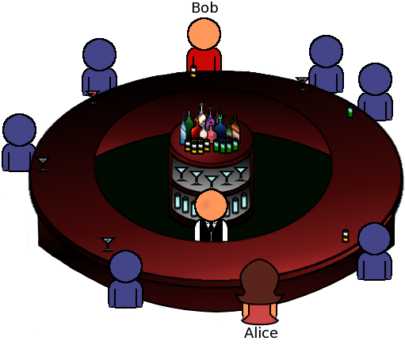
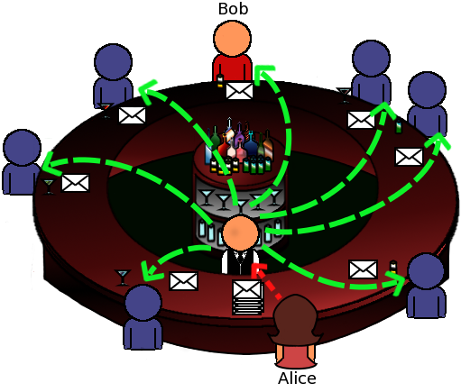
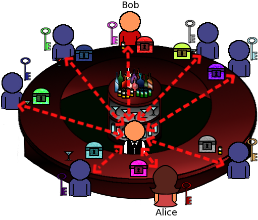

Explaining Broadcast Anonymous Routing (BAR) in 5'
What is Broadcast Anonymous Routing?
Broadcast Anonymous Routing (BAR) is a system that provides strong anonymity for both the sender and the receiver of a message. In addition to that, it makes it difficult for other parties to distinguish if BAR users are actually communicating or not! These anonymity properties are not possible through other anonymous channels based only on traditional onion routing. However, communication through the BAR requires from the users more bandwidth than traditional anonymous communication systems.
Can you explain broadcast anonymity in a simple manner?
Imagine Alice and Bob sitting in a crowded bar. Apart from Alice and Bob there are people standing between them and having their drinks. The bartender is willing to serve everyone around. Alice wants to communicate anonymously with Bob. She doesn't want anybody in the bar to know that she communicated with Bob and of course to hide the contents of her message. She can't just go there and talk to him because everyone will notice.
What can Alice do?
What can she do?
Alice writes a message for every customer in the bar and puts each message to a different envelop. Only Bob's message is real; all the other are "dummy" messages. She then hands the envelopes to the bartender along with specific directions.
What happens next?
Everybody will read a dummy message from Alice, except from Bob, the actual receiver.
Now people will be able to see that Alice communicated with someone in the bar, but they cannot deduce that Bob was the actual receiver. Everyone got a message from Alice! Even the bartender himself cannot tell who the receiver is. Users can find the actual receiver, unless all of them cooperate to find this. That's it, Bob is an anonymous receiver!

OK, I can see that Bob is anonymous, but I don't think that Alice really is.
BAR utilizes a couple of improvements in the basic version, to make Alice (the sender) anonymous. In the actual BAR protocol, Alice uses a random path of users, in order to handoff the message to the user for broadcasting. All the users have random keys in order to hide the routing path of Alice to the bartender (imagine something like Tor, with public keys dynamically updated for each user during his next login).
You said that others cannot even distinguish if Alice (and Bob) are actually communicating or not.
This is an advanced anonymity property known as sender-receiver anonymity. BAR achieves this because all BAR users are programmed to continuously handoff messages of constant length and size and at constant time slots to the bartender (the broadcast server). If some users do not want to communicate at a giver slot, they will simply handoff to the bartender fake messages of the proper length. In this way, no one can tell if users of the system are actually communicating or not!
Ok i think i got it but it is kind of messy with a lot of broadcast messages send and received. Will it work in computer networks?
We need a BAR server acting as the bartender to broadcast messages to others, in the network.
Alice will not actually handoff a different message in each slot but the same message is forwarded to the BAR server. Before sending the message, she encrypts it with an AES key shared with Bob, so that only Bob can decrypt.
She also shares a secret label with Bob and she appends this label to the message. Now the receivers don't have to decrypt each broadcast message; each user checks the non-encrypted label to filter if the message is intended for them, before actually attempting decryption! Messages with unkown labels are simply dropped by each receiver. Note that each label is for one use only and it is updated within each exchanged encrypted message.
That's nice, but I can still think of some problems. How many users can a BAR server handle?
In the basic version of the BAR protocol, there are several limitations like:
- A system with a single BAR server can only handle up to some hundreds of users. We need more BARs if the number of users exceeds a limit. We also need a way to make users from different BARs to communicate with each other.
- The system is not distributed. The BAR server is a single point of failure.
- If the BAR server is curious and it cooperates with one endpoint that is also curious, they can expose the other endpoint.
We are aware of these issues. Please note that most of them have been tackled in the extended BAR protocol published in the BAR paper.
How does BAR differs from other anonymity networks like Tor or I2P?
BAR has its advantages and disadvantages in comparison with other well-known anonymity networks. BAR provides stronger anonymity and is effective against a passive global adversary that performs some powerful attacks, like brute force or timing attacks while the other low-latency networks are not. It is also relatively easy to set up and deploy your own anonymous system using BAR since the broadcast mechanism is pretty straightforward. Finally BAR also provides low end-to-end latency for real time communications, as other networks.
On the other hand, note that BAR requires additional communication bandwidth from each user. In short, within BAR you can gain stronger anonymity against attacks which are known to be effective in other anonymity networks, but this will cost you a few Mbps of your bandwidth.
Can i use it?
There is a minimal implementation of BAR on Github serving as a proof of concept. You can use it at your own risk. Installation notes lie here.
I want to help!
Your help is very welcomed! We continuously have a need for testers, reviewers and developers. Don't hesitate to reach us.